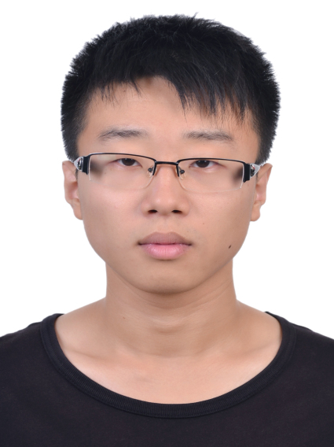
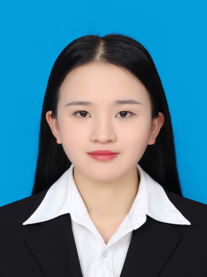

| |
|  |  |
 |
|||
2013-present 3D shape analysis |
2014-present saliency detection |
2016-present digital human modeling |
2017-present re-id, text&image synthesis |
2016-present visual tracking, segmentation |
2017-present video generation |
 |
 |  |
||||||
2019-present re-id |
2019-present image deraining |
2019-present |
2019-present |
2018-present point cloud reconstruction |
2018-present depth estimation |
2018-present point cloud reconstruction |
2018-present image deraining |
2018-present image dehazing |
 |
 |
|||||||
2017-present visual tracking |
2017-present object detection |
2017-present object tracking |
2017-present traffic big data |
2016-present traffic big data |
2016-present geometric processing |
2016-present object tracking |
2012-2019 computational design |
2011-2016 computer graphics |
2008-2015 geometric processing |
2002-2009 geometric processing |